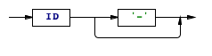

(Copyright 2008 Clifford Heath)
The Constellation Query Language (CQL) is a language for constructing and querying semantic information models. It is based on the graphical Object Role Modeling language, with some terminology adopted from SBVR. As described here, it uses English language keywords and expressions, but these may be substituted for keywords and expressions from another language. Because CQL has an open vocabulary, and because it is designed to resemble natural language, the formal grammar has many potential ambiguities. Some will become obvious as the syntax rules unfold, and in most cases the valid resolution is described.
The elements of a semantic model (known in CQL as a vocabulary) are:
Examples of concepts are Person, Name, Date, Address, Employee. Examples of fact types are “Person has given-Name”, “Person lives at Address”. A constraint is present in “Person has at most one family-Name”.
Name and Date are data types. Data types are lexical, meaning that they have values that may be written down, like a number, a name, etc. Some data types allow parameters, such as length or scale.
A numeric data type may indicate a quantity in a defined unit. Units are defined either as fundamental, or as a coefficient multiplied by a base unit or units, each base unit being raised to some integer power. A unit definition may be marked as approximate or exact. Queries check dimensional conformance and provide conversion factors where needed, so if you store dimensions in millimeters, you can query rectangular areas in square feet, for example, but not in years.
Every fact type involves one or more concepts (most often two), which each “play a role” in that fact type. Each fact type has one or more readings that associate those concepts through a natural-language expression, and each reading must include all the concepts (cover all the roles) of that fact type. The concepts may occur in any order in each reading, linked by arbitrary words of the natural language, as long as those linking words don’t have a special meaning to CQL in the contexts in which they will appear. In particular, no concept name may be used as a linking word. CQL is case sensitive however, and it is recommended (though not required, as in ORM) to use an initial capital letter for all concept names. This allows the lower-case form to be used as a linking word in readings.
For each reading, each concept may be associated with either a leading or a trailing adjective. The adjective may be any word that doesn’t have a special meaning, and is especially useful where a fact type might involve the same concept more than once (“Person is friend of other-Person”). Where an embedded constraint doesn’t make it clear, an adjective must be indicated by a hyphen character. For example, “Person has exactly one given Name” contains a mandatory uniqueness constraint (“exactly one”), and the adjective given occurs between that and Name, so it doesn’t need the hyphen as in the friendship reading shown above. In any case the hyphen is only needed on the first occurrence of a reading; subsequent uses of that reading to invoke the fact type will detect the adjective without it. Unlike in ORM readings, the hyphen character may not be used other than to indicate an adjective.
Every entity type has some identification scheme. An entity type that has no supertypes is identified by one or more fact roles played by that entity type. The identifying roles must be sufficient to distinguish one instance of this entity type from other instances. As an example, we might say:
Person is identified by given Name and family Name where Person has exactly one family Name, Person has exactly one given Name;
This defines Person, indicates the identifying roles for Person, and defines the two fact types that provide the identifying roles.
An entity that has a supertype will normally inherit its identification from the first (or primary) supertype, though it may instead define its own identification. To illustrate, we might say
Employee is a kind of Person identified by employee Number where Employee has exactly one employee Number;
A fact type may be named, which allows it to act as a concept, playing roles in other fact types. These objectified fact types may also define identifying roles. As an example, given existing definitions for Person and Company, we can say
Directorship is where Person directs Company;
The new fact type “Person directs Company” is objectified as Directorship. All fact types not bearing a uniqueness constraint that’s suitable for identification must be named.
A CQL file is a sequence of definitions, each terminated by a semi-colon.
Each CQL file must start with a vocabulary definition.

White space and comments as used in C and C++ are allowed:
/* comment
may span lines */ and
// introduces a comment to end of the current line.

An import definition imports concept names from another vocabulary, possibly using the alias syntax to rename some terms:

A unit definition defines a new unit identifier in terms of a real number or fraction multiplied by one or more base units, each raised to an integer power:


A concept definition is one of the following types, which start with the ID (name of the concept being defined). Names in CQL are case sensitive, and it’s conventional practice to use initial capital letters for concept names - this is required in Object Role Modeling but not in CQL. It is however a good way of allowing concept names to be to be distinguished from the same words in lower case, where they may occur in fact type readings.

base type:

subtype:

data type:

fact type:

derivation:

Note that a fact type does not always have to be named; it can simply be a reading such as “Person was born at one birth-Place”. In the case where no unique quantifier exists in the fact type, or where there are more than two roles, the fact type must have a name. For example, “Directorship is where Person directs Company”. Technically, where a fact type isn’t named, it isn’t treated as a concept, so it cannot play roles in other fact types. Syntactically though it’s more convenient to discuss these together.
Data types are derived from other data types, and the original data types are predefined in an imported vocabulary. They may refine the supertype by the use of length and scale parameters, where the supertype allows it. A value restriction might also apply, and these are discussed below.
The instances of each entity type are uniquely identified by the combination of their identifying roles. A subtype may inherit its identification from the first supertype, or it may define new identification. When a fact type is named and hence becomes an entity type, it is identified in the same way all fact instances are, by all its roles (or all-but-one, where a uniqueness constraint applies). Because of the use of adjectives, role names may consist of two words (the concept name and the adjective) or a role name defined using the role-name definition syntax discussed below).

All the fact type clauses of an entity type definition must involve the entity type and one of the identifying roles, and no other roles. There is one binary fact type for each identifying role, but there may be more than one reading for each fact type:
Person is identified by given Name and family Name: Person is called given-Name, given-Name is of Person, Person has family-Name, family-Name is of Person;
Note that the uniqueness constraints for these fact types are not shown, but are needed for valid identification. They can be provided later, but must be included within the same vocabulary. The hyphens must then be used to identify the adjectives.
An entity type may be declared to be a subtype (or more informally, using the word “kind”) or one or more other entity types, the supertypes:
Apple is a kind of Fruit;
No additional identification is required, as the supertype must already have an identification scheme, and the subtype inherits the identification of its first supertype, unless an alternate identification scheme is declared. Any subtype may play any of the roles of its supertypes.
Perishable has at most one ShelfLife; Fruit has one Price per kg; Apple is a kind of Fruit, Perishable;
In these fact types, each apple must have a price and may record a shelf life.
Subtyping is itself a fact type, which is useful when subtyping relationships must be constrained.
Fact types are defined by one or more readings provided as fact type clauses. All the clauses of a fact type must have the same set of role players.
If a concept plays more than one role in a fact type, adjectives must be consistently used with those roles across all readings. The only exception to this is that if all such roles use an adjective, one role of the concept may omit its adjective in all but one reading. In all other cases, each reading of a fact type may use (or omit) different adjectives for the same roles.
Fact type clauses may contain quantifier phrases, which assert mandatory, uniqueness or frequency constraints over the allowed population of instances of that fact. Qualifiers that assert ring constraints (see below) may also follow fact type clauses. In some fact type invocations in queries, a preceding outer-join qualifier “maybe” may also occur:

The post qualifiers are encased in square brackets, and are most commonly used for ring constraints. See the section on constraints for more details.
Fact Type Readings
Fact type readings are a sequence of roles and linking words. The definition of roles given here is slightly simplified for reasons that will be explained.
reading:

fact role:

leading adjective:
trailing adjective:

role name def:

That’s clearly ambiguous… especially since adjectives don’t always have to have an associated dash character. So how is the ambiguity resolved?
First of all, CQL looks through all the fact roles of all readings in this definition, and finds where every role name is defined (using the last syntax shown). The preceding ID that’s a defined concept name must be the real name of the role player, but elsewhere in this definition, it will be known by the role name. In the process, any adjectives that are marked with a dash are remembered with the associated role player. Adjectives may not be the same as the name of any defined concept, or of any local role name.
Then, all role players can be identified (the ID in the fact role syntax diagram), because all will either be defined concepts or local role names. Having identified all role players, unmarked adjectives are picked up in one of two ways; either they’re used with this concept elsewhere in the same definition, or they occur in a reading of a previously defined fact type that uses those adjectives.
All the discussion so far has only referred to fact type readings being used to make new definitions, but the last paragraph reveals another usage. A fact type reading may be re-iterated in order to link that existing fact type into a new definition. This allows the introduction of the full definition of fact roles.
The previous definition of fact roles omitted discussion of some of the optional syntactic elements. We discuss the quantifier here.
Person has exactly one family-Name;
The fact type reading is “Person has family-Name”, and the quantifier “exactly one” requires that each Person occurs exactly once in the fact population; in other words, a family name must be recorded for each person, and only one family name may be recorded for each person.
Quantifiers
The full list of possible quantifiers is shown below (though some are only used in constraints):

quantity:

In this way, CQL absorbs many of the uniqueness, mandatory and frequency constraints of Object Role Modeling. The only ORM characteristic that cannot be expressed this way is a non-mandatory constraint having a minimum frequency above one; for example a constraint that allows zero, or more than two, occurrences. For example, in a footy tipping competition, it might be the case that if a participant submits no tips this week, they get the tips published by a known tipster, but if they do submit tips, they must submit at least eight. This kind of non-mandatory frequency constraint may be expressed in CQL using the maybe qualifier:
maybe Participant entered at least 8 Tips
In addition to the value restrictions that can apply to data types, a role played by a data type may be restricted to specified values or value ranges:
restriction:

range:

numeric range:

string range:

Note that the ranges in a value restriction may be open ended at one end.
Fact Instances
When a fact reading is re-iterated with values, a fact instance is created. The simplest is where a declaration is just a concept name followed by a value:
Name ‘Fred’;
This form is allowed for any data type, or any entity type that’s identified by a single data type (or an entity identified by a single entity identified by a single data type, etc). In more complex cases, it might be necessary to invoke more than one fact type to define the instance:
Person is called given name ‘Fred’, Person has family Name ‘Bloggs’;
The Person instance being defined is a reference to the same instance in each fact type reading; there is an implicit join over the two clauses.
Fact Derivation (Queries)
Fact derivation is a large subject by itself, so we’ll leave a detailed coverage for a future paper. Here’s a short introduction however.
When a fact type has the optional clauses that define its derivation, the population of that fact type is derived as a query over the fact types it invokes. Each condition clause is either a comparison, which compares a role value with a constant or another role value, or a fact type reading.
For a reading, at least one role must match an occurrence of that role in the new fact type or in another reading in the derivation. This match defines a logical join operation across the fact populations. Where the same concept occurs in different roles, and those roles are not to be joined, additional adjectives or defined role names may be used to separate the roles.
The values may be modified by functions, such as the built-in functions on the Date data type which can extract the year, month, day, etc from the Date.
It’s possible to negate any invoked fact type by inserting the word no into it as a quantifier, or not as an additional linking word. Here are some examples of fact type derivations (the full fact type definition is elided):
Person has family Name, family Name = ‘Bloggs’, Person is not called given Name ‘Fred’, Person is a kind of Employee, Employee is managed by no Manager;
Result Constellations
A fact derivation may include a returning clause. Normally, when processing a query, only the concept instances that play the roles of the derived fact type (and satisfy the query) will be available in the results, and there is no defined ordering in the values. When the returning clause is used, additional concept and fact instances may be accessible within the result, which may also be sorted. This extension of the result set is transitive, so that if a derived fact type invokes another derived fact type, the returned instances from the invoked fact type’s returning clause will also be available.
The results now include more than just a simple table of the instances that play the roles of the derived fact type. Instead, each concept instance may be associated with additional facts for other roles it plays, and the roles of those facts will be populated by further concept instances, and so on. This data structure is hereby defined as a constellation, which is where CQL gets its name. The query has selected certain instances from the entire fact population, much as an astronomer might select stars from the night sky.
The use of returning doesn’t change the contents of
the defined fact type, it’s merely a pragmatic instruction to
the query engine about which additional instances will be useful to
the calling program, and in what order.
Constraints
Quantifiers allow the definition of the most common kinds of constraints, the mandatory, uniqueness and frequency constraints (collectively, CQL calls these presence constraints). Often there are constraints that cannot be expressed in this form however, such as when a concept must play one of many unrelated roles. This is handled in CQL by the use of an external constraint definition, or with a ring constraint qualifier.

Mandatory (and either-or) constraints
When a single role player must play one and only one (or at least one) of a set of roles, we can say:
each Range occurs at least one time in Range has minimum-Bound, Range has maximum-Bound; for each ReceivedItem exactly one of these holds: ReceivedItem is for PurchaseOrderItem, ReceivedItem is for TransferRequest;
Where such constraints must be declared over fact types in which the same role player occurs in unrelated roles, the role players may be separated by the use of the keywords some and that. “That” means that this role player is the same one referred to earlier, and “some” means it’s not. If that’s still not enough, you can introduce adjectives and role names to separate the different instances of the same concept:
for each Unit exactly one of these holds: Unit is fundamental, that Unit is derived from some base-Unit;
External Uniqueness Constraints
For example, supposing that we were to identify Person instances by given name and family name (not a good idea in a real system!) we need to ensure that the combination given name, family name is unique. We can say:
each family Name, given Name occurs at most one time in Person is known by given-Name, Person has family-Name;
Subset Constraints
When one role may be played only if another is, you can use a subset constraint:
Address has third-StreetLine only if Address has second-StreetLine;
Note that this example didn’t use the first and second StreetLine, as we assume that the first StreetLine is a mandatory part of the address, so the subset constraint would be redundant.
Equality Constraints
Equality constraints declare that the populations of two roles (or role sequences) are the same. They are expressed using ‘if and only if’:
Competition is in Series if and only if Competition has series-Number;
Ring Constraints
When a fact type includes the same concept more than once, or includes a supertype and its subtype, there’s the possibility of the same instance playing both roles. This is often not desired, but further it introduces a whole class of further situations which can be restricted using ring constraints. The CQL keywords used in fact clause qualifiers for ring constraints are the following:
intransitive, transitive, acyclic and symmetric. Intransitive means that just because “A relates to B”, and “B relates to C”, that doesn’t mean that “A relates to C”. Transitive means the opposite. Acyclic means that no A may relate to itself, or to any B that has that relation to A, and so on. Symmetric means that if A relates to B, B also relates to A (so there is only one fact instance possible between A and B).
Join constraints
Most of the above constraint types may use joins, where more than one fact type is joined together with the and keyword. A full discussion is beyond the scope of this paper, but here’s a small example of a subset constraint using a join:
Diplomat speaks Language; Country uses Language; Diplomat serves in Country; Diplomat serves in Country only if Country uses Language and Diplomat speaks Language;
This constraint requires that in order to serve in a country, a diplomat must speak at least one language used in that country.